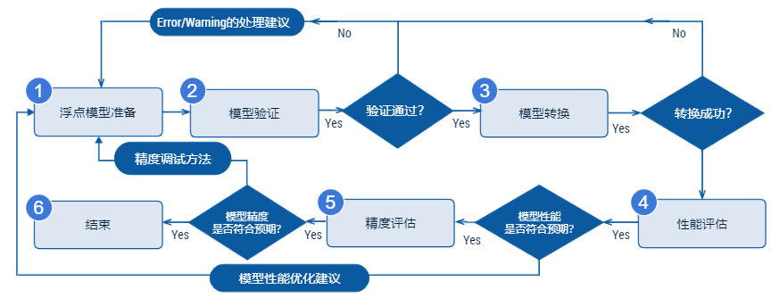
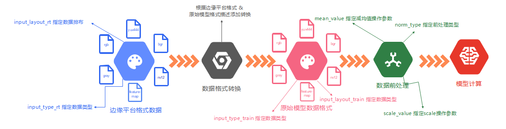
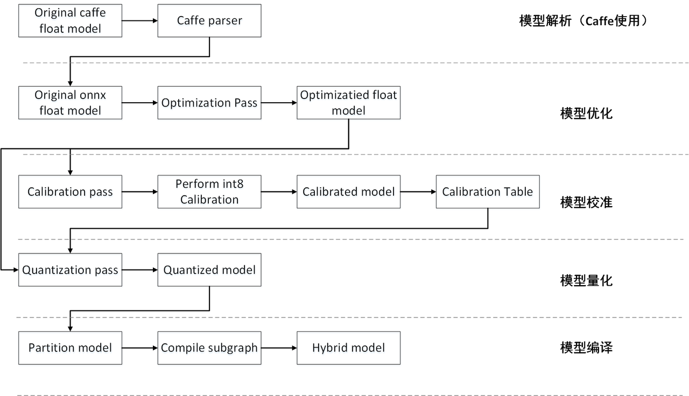
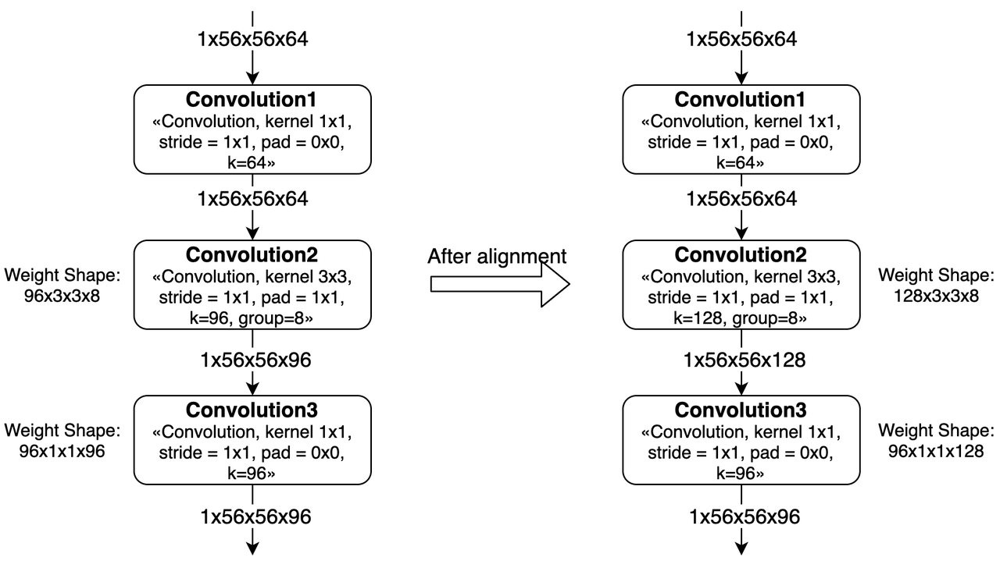
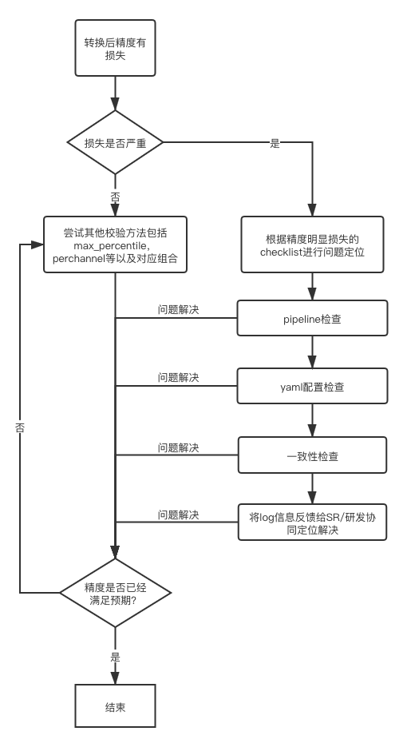

3. 模型转换
3.1. 简介
模型转换是指将原始浮点模型转换为地平线混合异构模型的过程。 原始浮点模型（文中部分地方也称为浮点模型）是指您通过TensorFlow/PyTorch等等DL框架训练得到的 可用模型，这个模型的计算精度为float32；混合异构模型是一种适合在地平线芯片上运行的模型格式。 本章节将反复使用到这两种模型名词，为避免理解歧义，请先理解这个概念再阅读下文。
配合地平线工具链的模型完整开发过程，需要经过 浮点模型准备、模型验证、模型转换、 性能评估 和 精度评估 共五个重要阶段，如下图。
{kind=link}
浮点模型准备 阶段的产出是输入到模型转换工具的浮点模型， 这些模型一般都是基于公开DL训练框架得到的， 需要您注意的是将模型导出为地平线工具支持的格式。 具体要求与建议请参考 浮点模型准备。
模型验证 阶段用来确保算法模型是符合工具链要求的。 地平线提供了指定工具完成此阶段检查，对于不符合要求的情况， 检查工具会明确给出不符合要求的具体算子信息，方便您结合算子约束的说明将模型调整过来。 具体使用请参考 验证模型。
模型转换 阶段将完成浮点模型到地平线混合异构模型的转换。 为了模型能在地平线芯片上高效运行，地平线转换工具内部会完成模型优化、量化和编译等关键步骤， 地平线的量化方法经过了长期的技术与生产验证，在大部分典型模型上可以达到99%以上的精度保持效果。 具体使用请参考 转换模型。
性能评估 阶段提供了系列评估模型性能的工具。 在应用部署前，您可以使用这些工具验证模型性能是否达到应用要求。 对于部分性能不及预期的情况，也可以参考地平线提供的性能优化建议进行调优。 具体评估请参考 模型性能分析与调优。
精度评估 阶段提供了系列评估模型精度的工具。 大部分情况下，地平线转换后模型可以保持与原始浮点模型基本一致的精度效果， 在应用部署前，您可以使用地平线工具验证模型的精度是否符合预期。 对于部分精度不及预期的情况，也可以参考地平线提供的性能优化建议进行调优。 具体评估请参考 模型精度分析与调优。
注意
通常在模型转换后就已经得到了可以上板的模型， 但是为了确保您得到的模型性能和精度都是符合应用要求的， 地平线强烈建议每次转换后都完成后续的性能评估与精度评估步骤。
3.2. 浮点模型准备
基于公开DL框架训练得到的浮点模型是转换工具的输入，目前转换工具支持的DL框架如下：
框架 |
Caffe |
PyTorch |
TensorFlow |
MXNet |
其他框架 |
|---|---|---|---|---|---|
地平线工具链 |
支持 |
支持（转ONNX） |
请联系地平线 |
||
以上框架中，Caffe导出的caffemodel是直接支持的； PyTorch、TensorFlow和MXNet是通过转到ONNX实现间接支持， ONNX目前主要支持的opset版本是opset10和opset11。
对于不同框架到ONNX的转换，目前都有对应的标准化方案，参考如下：
- 🔗 Pytorch2Onnx：PytTorch官方API支持直接将模型导出为ONNX模型，参考链接：
https://pytorch.org/tutorials/advanced/super_resolution_with_onnxruntime.html。
- 🔗 Tensorflow2Onnx：基于ONNX社区的onnx/tensorflow-onnx 进行转换，参考链接：
- 🔗 MXNet2Onnx：MXNet官方API支持直接将模型导出为ONNX模型，参考链接：
https://github.com/dotnet/machinelearning/blob/master/test/Microsoft.ML.Tests/OnnxConversionTest.cs。
- 🔗 更多框架的ONNX转换支持，参考链接：
https://github.com/onnx/tutorials#converting-to-onnx-format。
3.3. 验证模型
为了确保模型能顺利在地平线平台高效运行，模型中所使用的算子需要符合平台的算子约束。
算子约束部分给出了我们支持的具体算子，每个算子都给出了具体的参数限制，
具体详细信息请参考
supported_op_list_and_restrictions/
路径下的《supported_op_list_and_restrictions_release》Excel表格。
考虑到地平线支持的算子较多，为了避免人工逐条校对的麻烦，
我们提供了 hb_mapper checker 工具用于验证模型所使用算子的支持情况。
3.3.1. 使用 hb_mapper checker 工具验证模型
- hb_mapper checker 工具的使用方式如下：
hb_mapper checker --model-type ${model_type} \ --march ${march} \ --proto ${proto} \ --model ${caffe_model/onnx_model} \ --input-shape ${input_node} ${input_shape} \ --output ${output}
- hb_mapper checker 参数解释：
- --model-type
用于指定检查输入的模型类型，目前只支持设置
caffe或者onnx。- --march
用于指定需要适配的AI芯片类型，X/J3芯片应设置为
bernoulli2。- --proto
此参数仅在
model-type指定caffe时有效，取值为Caffe模型的prototxt文件名称。- --model
在
model-type被指定为caffe时，取值为Caffe模型的caffemodel文件名称。 在model-type被指定为onnx时，取值为ONNX模型文件名称。- --input-shape
可选参数，明确指定模型的输入shape。 取值为
{input_name} {NxHxWxC/NxCxHxW}，input_name与shape之间以空格分隔。 例如模型输入名称为data1，输入shape为[1,224,224,3]， 则配置应该为--input_shape data1 1x224x224x3。 如果此处配置shape与模型内shape信息不一致，以此处配置为准。注解
注意一个
--input-shape只接受一个name和shape组合，如果您的模型有多个输入节点， 在命令中多次配置--input-shape参数即可。- --output
可选参数，接受设置值为一个日志文件名称。 指定该参数情况下，检查的结果将输出到指定的日志文件。
3.3.2. 检查异常处理
如果模型检查不通过，hb_mapper checker 工具会报出ERROR。
在当前工作目录下会生成hb_mapper_checker.log文件，从文件中可以查看到具体的报错。
例如以下配置中含不可识别算子类型 Accuracy：
layer {
name: "data"
type: "Input"
top: "data"
input_param { shape: { dim: 1 dim: 3 dim: 224 dim: 224 } }
}
layer {
name: "Convolution1"
type: "Convolution"
bottom: "data"
top: "Convolution1"
convolution_param {
num_output: 128
bias_term: false
pad: 0
kernel_size: 1
group: 1
stride: 1
weight_filler {
type: "msra"
}
}
}
layer {
name: "accuracy"
type: "Accuracy"
bottom: "Convolution3"
top: "accuracy"
include {
phase: TEST
}
}
使用 hb_mapper checker 检查这个模型，您会在hb_mapper_checker.log中得到如下信息：
ValueError: Not support layer name=accuracy type=Accuracy
3.3.3. 检查结果解读
如果不存在ERROR，则顺利通过校验。hb_mapper checker 工具将直接输出如下信息：
==============================================
Node ON Subgraph Type
----------------------------------------------
conv1 BPU id(0) HzSQuantizedConv
conv2_1/dw BPU id(0) HzSQuantizedConv
conv2_1/sep BPU id(0) HzSQuantizedConv
conv2_2/dw BPU id(0) HzSQuantizedConv
conv2_2/sep BPU id(0) HzSQuantizedConv
conv3_1/dw BPU id(0) HzSQuantizedConv
conv3_1/sep BPU id(0) HzSQuantizedConv
...
结果中每行都代表一个模型节点的check情况，每行含Node、ON、Subgraph和Type四列， 分别为节点名称、执行节点计算的硬件、节点所属子图和节点映射到的地平线内部实现名称。 如果模型在非输入和输出部分出现了CPU计算的算子，工具将把这个算子前后连续在BPU计算的部分拆分为两个Subgraph（子图）。
3.3.4. 检查结果的调优指导
在最理想的情况下，非输入和输出部分都应该在BPU上运行，也就是只有一个子图。
如果出现了CPU算子导致拆分多个子图，hb_mapper checker 工具会给出导致CPU算子出现的具体原因。
例如以下Caffe模型的Convolution2使用了9x9 kernel，超出了Convolution的算子约束。
layer {
name: "data"
type: "Input"
top: "data"
input_param { shape: { dim: 1 dim: 3 dim: 224 dim: 224 } }
}
layer {
name: "Convolution1"
type: "Convolution"
bottom: "data"
top: "Convolution1"
convolution_param {
num_output: 128
bias_term: false
pad: 0
kernel_size: 1
group: 1
stride: 1
weight_filler {
type: "msra"
}
}
}
layer {
name: "Convolution2"
type: "Convolution"
bottom: "Convolution1"
top: "Convolution2"
convolution_param {
num_output: 128
bias_term: false
pad: 4
kernel_size: 9
group: 1
stride: 1
weight_filler {
type: "msra"
}
}
}
layer {
name: "Convolution3"
type: "Convolution"
bottom: "Convolution2"
top: "Convolution3"
convolution_param {
num_output: 128
bias_term: false
pad: 1
kernel_size: 3
group: 1
stride: 1
weight_filler {
type: "msra"
}
}
}
使用 hb_mapper checker 工具检查这个模型时，您将得到kernel超出约束的提示如下：
1 Layer Convolution2
2 Expected data shape range of Kernel shape is [[1, 2048],[1, 7],[1, 7],[1, 2048]], but the data shape is [128,9,9,128]
模型最终检查结果也会出现一个以上的分段，如下：
===============================================
Node ON Subgraph Type
-----------------------------------------------
Convolution1 BPU id(0) HzSQuantizedConv
Convolution2 CPU -- Conv
Convolution3 BPU id(1) HzSQuantizedConv
根据 hb_mapper checker 给出的提示，如果需要更高的性能，您需要将Convolution2的kernel调整到限制范围内。
当然，多个子图也不会影响整个转换流程，如果在后续性能评估不达预期，您再根据这里的建议尽量将算子调整到BPU上运行。
3.4. 转换模型
转换模型阶段会完成浮点模型到地平线混合异构模型的转换，经过这个阶段，您将得到一个可以在地平线芯片上运行的模型。 在进行转换之前，请确保已经顺利通过了3.3节的验证模型过程。
模型转换使用 hb_mapper makertbin 工具完成，转换期间会完成模型优化和校准量化等重要过程，校准需要依照模型预处理要求准备校准数据。
为了方便您全面了解模型转换，本节将依次介绍转换工具使用、校准数据准备、转换内部过程解读、转换结果解读和转换产出物解读。
3.4.1. 使用 hb_mapper makertbin 工具转换模型
- hb_mapper makertbin命令使用方式如下：
hb_mapper makertbin --config ${config_file} \ --model-type ${model_type}
- hb_mapper makertbin参数解释：
- --model-type
用于指定转换输入的模型类型，目前支持设置
caffe或者onnx。- --config
模型编译的配置文件，内容采用yaml格式，文件名使用.yaml后缀。一份完整的配置文件模板如下：
注解
此处配置文件仅作展示，在实际模型配置文件中
caffe_model与onnx_model两个参数只存在其中之一。 即，要么是Caffe模型，要么是ONNX模型。# 模型参数组 model_parameters: # 原始Caffe浮点模型描述文件 prototxt: '***.prototxt' # 原始Caffe浮点模型数据模型文件 caffe_model: '****.caffemodel' # 原始Onnx浮点模型文件 onnx_model: '****.onnx' # 转换的目标AI芯片架构 march: 'bernoulli2' # 模型转换输出的用于上板执行的模型文件的名称前缀 output_model_file_prefix: 'mobilenetv1' # 模型转换输出的结果的存放目录 working_dir: './model_output_dir' # 指定转换后混合异构模型是否保留输出各层的中间结果的能力 layer_out_dump: False # 转换过程中日志生成级别 log_level: 'debug' # 输入信息参数组 input_parameters: # 原始浮点模型的输入节点名称 input_name: "data" # 原始浮点模型的输入数据格式（数量/顺序与input_name一致） input_type_train: 'bgr' # 原始浮点模型的输入数据排布（数量/顺序与input_name一致） input_layout_train: 'NCHW' # 原始浮点模型的输入数据尺寸 input_shape: '1x3x224x224' # 网络实际执行时，输入给网络的batch_size, 默认值为1 input_batch: 1 # 在模型中添加的输入数据预处理方法 norm_type: 'data_mean_and_scale' # 预处理方法的图像减去的均值, 如果是通道均值，value之间必须用空格分隔 mean_value: '103.94 116.78 123.68' # 预处理方法的图像缩放比例，如果是通道缩放比例，value之间必须用空格分隔 scale_value: '0.017' # 转换后混合异构模型需要适配的输入数据格式（数量/顺序与input_name一致） input_type_rt: 'yuv444' # 输入数据格式的特殊制式 input_space_and_range: 'regular' # 转换后混合异构模型需要适配的输入数据排布（数量/顺序与input_name一致），若input_type_rt配置为nv12，则此处参数不需要配置 input_layout_rt: 'NHWC' # 校准参数组 calibration_parameters: # 模型校准使用的标定样本的存放目录 cal_data_dir: './calibration_data' # 开启图片校准样本自动处理（skimage read; resize到输入节点尺寸） preprocess_on: False # 校准使用的算法类型 calibration_type: 'kl' # max 校准方式的参数 max_percentile: 1.0 # 强制指定OP在CPU上运行 run_on_cpu: {OP_name} # 强制指定OP在BPU上运行 run_on_bpu: {OP_name} # 编译参数组 compiler_parameters: # 编译策略选择 compile_mode: 'latency' # 是否打开编译的debug信息 debug: False # 模型运行核心数 core_num: 1 # 模型编译的优化等级选择 optimize_level: 'O3' custom_op: # 自定义op的校准方式, 推荐使用注册方式 register custom_op_method: register # 自定义OP的实现文件, 多个文件可用";"分隔, 该文件可由模板生成, 详情见自定义OP相关文档 op_register_files: sample_custom.py # 自定义OP实现文件所在的文件夹, 请使用相对路径 custom_op_dir: ./custom_op
配置文件主要包含模型参数组、输入信息参数组、校准参数组和编译参数组。 在您的配置文件中，四个参数组位置都需要存在，具体参数分为可选和必选，可选参数可以不配置。 具体参数的设置形式为：
param_name: 'param_value'，参数存在多个值时使用';'符号分隔：param_name: 'param_value1; param_value2; param_value3'。小技巧
当模型为多输入模型时, 强烈建议用户将可选参数们(
input_name,input_shape等)显式的写出, 以免造成参数对应顺序上的错误。注意
请注意，如果设置
input_type_rt为nv12，则模型的输入尺寸中不能出现奇数。以下是具体参数信息，参数会比较多，我们依照上述的参数组次序介绍。
🛠️ 模型参数组
编
号
参数名称
参数配置说明
可选/
必选
1
prototxt参数作用：指定Caffe浮点模型的prototxt文件名称。
取值范围：无。
默认配置：无。
参数说明：在
hb_mapper makertbin的model-type为caffe时必须配置。可选
2
caffe_model参数作用：指定Caffe浮点模型的caffemodel文件名称。
取值范围：无。
默认配置：无。
参数说明：在
hb_mapper makertbin的model-type为caffe时必须配置。可选
3
onnx_model参数作用：指定ONNX浮点模型的onnx文件名称。
取值范围：无。
默认配置：无。
参数说明：在
hb_mapper makertbin的model-type为onnx时必须配置。可选
4
march参数作用：指定产出混合异构模型需要支持的平台架构。
取值范围：
bernoulli2。默认配置：
bernoulli2。参数说明： X3&J3芯片对应的微框架。
根据您使用的平台选择。
可选
5
output_model_file_prefix参数作用：指定转换产出混合异构模型的名称前缀。
取值范围：无。
默认配置：无。
参数说明：输出的定点模型文件的名称前缀。
必选
6
working_dir参数作用：指定模型转换输出的结果的存放目录。
取值范围：无。
默认配置：
model_output。参数说明：若该目录不存在, 则工具会自动创建目录。
可选
7
layer_out_dump参数作用：指定混合异构模型是否保留输出中间层值的能力。
取值范围：
True、False。默认配置：
False。参数说明：输出中间层的值是调试需要用到的手段，
常规状态下请不要开启。
可选
8
log_level参数作用：指定转换工具日志文件的记录级别。
取值范围：
debug、info、warn。默认配置：
debug。参数说明：
debug输出模型转换的详细信息;info只输出关键信息;warn输出警告和错误级别以上的信息。可选
9
output_nodes参数作用：指定模型的输出节点。
取值范围：无。
默认配置：无。
参数说明：一般情况下，转换工具会自动识别模型的输出节点。
此参数用于支持您指定一些中间层次作为输出。
设置值为模型中的具体节点名称，
多个值的配置方法请参考前文对
param_value配置描述。需要您注意的是，一旦设置此参数后，工具将不再自动识别输出节点，
您通过此参数指定的节点就是全部的输出。
可选
🛠️ 输入信息参数组
编
号
参数名称
参数配置说明
可选/
必选
1
input_name参数作用：指定原始浮点模型的输入节点名称。
取值范围：无。
默认配置：无。
参数说明：浮点模型只有一个输入节点情况时不需要配置，
多于一个输入节点时必须配置以保证后续类型及校准数据输入顺序的准确性。
多个值的配置方法请参考前文对param_value配置描述。
可选
2
input_type_train参数作用：指定原始浮点模型的输入数据类型。
取值范围：
rgb、bgr、yuv444、gray、featuremap。默认配置：无。
参数说明：每一个输入节点都需要配置一个确定的输入数据类型，
存在多个输入节点时，设置的节点顺序需要与
input_name里的顺序严格保持一致。多个值的配置方法请参考前文对
param_value配置描述。数据类型的选择请参考下文
部分的介绍。
必选
3
input_layout_train参数作用：指定原始浮点模型的输入数据排布。
取值范围：
NHWC、NCHW。默认配置：无。
参数说明：每一个输入节点都需要配置一个确定的输入数据排布，
这个排布必须与原始浮点模型所采用的数据排布相同。存在多个输入节点时，
设置的节点顺序需要与
input_name里的顺序严格保持一致。多个值的配置方法请参考前文对
param_value配置描述。什么是数据排布请参考下文
部分的介绍。
可选
4
input_type_rt参数作用：转换后混合异构模型需要适配的输入数据格式。
取值范围：
rgb、bgr、yuv444、nv12、gray、featuremap。默认配置：无。
参数说明：这里是指明您需要使用的数据格式，
不要求与原始模型的数据格式一致，
但是需要注意在边缘平台喂给模型的数据是使用这个格式。
每一个输入节点都需要配置一个确定的输入数据类型，存在多个输入节点时，
设置的节点顺序需要与
input_name里的顺序严格保持一致。多个值的配置方法请参考前文对
param_value配置描述。数据类型的选择请参考下文
部分的介绍。
必选
5
input_layout_rt参数作用：转换后混合异构模型需要适配的输入数据排布。
取值范围：
NCHW、NHWC。默认配置：无。
参数说明：每一个输入节点都需要配置一个确定的输入数据排布，
这个输入是您希望给混合异构模型指定的排布。
不合适的输入数据的排布设置将会影响性能，
X/J3平台建议用户使用 NHWC 格式输入。
若input_type_rt配置为nv12，则此处参数不需要配置。
存在多个输入节点时，设置的节点顺序需要与
input_name里的顺序严格保持一致。多个值的配置方法请参考前文对
param_value配置描述。什么是数据排布请参考下文
部分的介绍。
可选
6
input_space_and_range参数作用：指定输入数据格式的特殊制式。
取值范围：
regular,bt601_video。默认配置：
regular。参数说明：这个参数是为了适配不同ISP输出的yuv420格式，
在相应
input_type_rt为nv12时，该配置才有效。regular就是常见的yuv420格式，数值范围为[0,255]；bt601_video是另一种视频制式yuv420，数值范围为[16,235]。更多信息可以通过网络资料了解bt601，
在没有明确需要的情况下，您不要配置此参数。
可选
7
input_shape参数作用：指定原始浮点模型的输入数据尺寸。
取值范围：无。
默认配置：无。
参数说明：shape的几个维度以
x连接，例如1x3x224x224。原始浮点模型只有一个输入节点情况时可以不配置，
工具会自动读取模型文件中的尺寸信息。
配置多个输入节点时，设置的节点顺序需要与
input_name里的顺序严格保持一致，
多个值的配置方法请参考前文对
param_value配置描述。可选
8
input_batch参数作用：指定转换后混合异构模型需要适配的输入batch数量。
取值范围：
1-128。默认配置：
1。参数说明：这里input_batch为转换后混合异构bin模型输入batch数量，
但不影响转换后onnx的模型的输入batch数量。
此参数不配置时默认为1。
配置多个输入节点时，设置的节点顺序需要与
input_name里的顺序严格保持一致，
多个值的配置方法请参考前文对
param_value配置描述。可选
9
norm_type参数作用：在模型中添加的输入数据预处理方法。
取值范围：
data_mean_and_scale、data_mean、data_scale、no_preprocess。默认配置：无。
参数说明：
no_preprocess表示不添加任何数据预处理；data_mean表示提供减均值预处理；data_scale表示提供乘scale系数预处理；data_mean_and_scale表示提供先减均值再乘scale系数前处理。输入节点时多于一个时，设置的节点顺序需要与
input_name里的顺序严格保持一致，
多个值的配置方法请参考前文对
param_value配置描述。配置该参数的影响请参考下文
部分的介绍。
必选
10
mean_value参数作用：指定预处理方法的图像减去的均值。
取值范围：无。
默认配置：无。
参数说明：当
norm_type存在data_mean_and_scale或
data_mean时需要配置该参数。对于每一个输入节点而言，存在两种配置方式。
第一种是仅配置一个数值，表示所有通道都减去这个均值；
第二种是提供与通道数量一致的数值（这些数值以空格分隔开），
表示每个通道都会减去不同的均值。
配置的输入节点数量必须与
norm_type配置的节点数量一致，如果存在某个节点不需要
mean处理，则为该节点配置'None'。多个值的配置方法请参考前文对
param_value配置描述。可选
11
scale_value参数作用：指定预处理方法的数值scale系数。
取值范围：无。
默认配置：无。
参数说明：当
norm_type存在data_mean_and_scale或data_scale时需要配置该参数。对于每一个输入节点而言，存在两种配置方式。
第一种是仅配置一个数值，表示所有通道都乘以这个系数；
第二种是提供与通道数量一致的数值（这些数值以空格分隔开），
表示每个通道都会乘以不同的系数。
配置的输入节点数量必须与
norm_type配置的节点数量一致，如果存在某个节点不需要
scale处理，则为该节点配置'None'。多个值的配置方法请参考前文对
param_value配置描述。可选
🛠️ 校准参数组
编
号
参数名称
参数配置说明
可选/
必选
1
cal_data_dir参数作用：指定模型校准使用的标定样本的存放目录。
取值范围：无。
默认配置：无。
参数说明：目录内校准数据需要符合输入配置的要求，
具体请参考 准备校准数据
部分的介绍。配置多个输入节点时，
设置的节点顺序需要与
input_name里的顺序严格保持一致，多个值的配置方法请参考前文对
param_value配置描述。必选
2
preprocess_on参数作用：开启图片校准样本自动处理。
取值范围：
True、False。默认配置：
False。参数说明：在启动该功能时，
cal_data_dir 目录下存放的都是jpg/bmp/png等图片数据，
工具会使用skimage读取图片，
并resize到输入节点需要的尺寸。
为了保证校准的效果，建议您保持该参数关闭。
使用的影响请参考 准备校准数据
部分的介绍。
可选
3
calibration_type参数作用：校准使用的算法类型。
取值范围：
default、kl、max。默认配置：无。
参数说明：
kl和max都是公开的校准量化算法，其基本原理可以通过网络资料查阅。
default是一个自动搜索的策略，会尝试从系列校准量化参数中获得一个相对效果较好的组合。
建议您先尝试
default，如果最终的精度结果不满足预期
再根据 精度调优
部分建议配置不同的校准参数。
必选
4
max_percentile参数作用：该参数为
max校准方法的参数，用以调整
max校准的截取点。取值范围：
0.0~1.0。默认配置：
1.0。参数说明：此参数仅在
calibration_type为max时有效，常用配置选项有：0.99999/0.99995/0.99990/0.99950/0.99900。
建议您先尝试
calibration_type配置default，如果最终的精度结果不满足预期
再根据 精度调优 部分建议调整该参数。
可选
5
per_channel参数作用：控制是否针对featuremap的每个channel进行校准。
取值范围：
True、False。默认配置：
False。参数说明：
calibration_type设置非default时有效。建议您先尝试
default，如果最终的精度结果不满足预期
再根据 精度调优
部分建议调整该参数。
可选
6
run_on_cpu参数作用：强制指定算子在CPU上运行。
取值范围：无。
默认配置：无。
参数说明：CPU上虽然性能不及BPU，但是提供的是float精度计算，
如果您确定某些算子需要在CPU上计算，
可以通过该参数指定。
设置值为模型中的具体节点名称，
多个值的配置方法请参考前文对
param_value配置描述。可选
7
run_on_bpu参数作用：强制指定OP在BPU上运行。
取值范围：无。
默认配置：无。
参数说明：为了保证最终量化模型的精度，少部分情况下，
转换工具会将一些具备BPU计算条件的算子放在CPU上运行。
如果您对性能有较高的要求，愿意以更多一些量化损失为代价，
则可以通过该参数明确指定算子运行在BPU上。
设置值为模型中的具体节点名称，
多个值的配置方法请参考前文对
param_value配置描述。可选
🛠️ 编译参数组
编
号
参数名称
参数配置说明
可选/
必选
1
compile_mode参数作用：编译策略选择。
取值范围：
latency、bandwidth。默认配置：
latency。参数说明：
latency以优化推理时间为目标；bandwidth以优化ddr的访问带宽为目标。如果模型没有严重超过预期的带宽占用，建议您使用
latency策略。必选
2
debug参数作用：是否打开编译的debug信息。
取值范围：
True、False。默认配置：
False。参数说明：开启该参数情况下，
编译后模型将附带一些调试信息，
用于支持后续的调优分析过程。
默认情况下，建议您保持该参数关闭。
可选
3
core_num参数作用：模型运行核心数。
取值范围：
1、2。默认配置：
1。参数说明：地平线平台支持利用多个AI加速器核心同时完成一个推理任务，
多核心适用于输入尺寸较大的情况，
理想状态下的双核速度可以达到单核的1.5倍左右。
如果您的模型输入尺寸较大，对于模型速度有极致追求，
可以配置
core_num=2。可选
4
optimize_level参数作用：模型编译的优化等级选择。
取值范围：
O0、O1、O2、O3。默认配置：无。
参数说明：优化等级可选范围为
O0~O3。O0不做任何优化, 编译速度最快，优化程度最低,。O1-O3随着优化等级提高，预期编译后的模型的执行速度会更快，
但是所需编译时间也会变长。
正常用于生产和验证性能的模型，
必须使用
O3级别优化才能保证得到最优性能。某些流程验证或精度调试过程中，
可以尝试使用更低级别优化加快过程速度。
必选
5
input_source参数作用：设置上板bin模型的输入数据来源。
取值范围：
ddr,pyramid,resizer。默认配置：
{input_name} : ddr。参数说明：这个参数是适配工程环境的选项，
建议您已经全部完成模型验证后再配置。
ddr表示数据来自内存，pyramid和resizer表示来自AI芯片上的固定硬件。
具体在工程环境中如何适配
pyramid和resizer数据源，请您参考第4章涉及到的
此参数配置有点特殊，例如模型输入名称为 data,
数据源为内存(ddr), 则此处应该配置值为
"data": "ddr"。可选
6
max_time_per_fc参数作用：指定模型的每个function call的最大可连续执行时间(单位ms)。
取值范围：
0-4294967295。默认配置：
0。参数说明：编译后的数据指令模型在BPU上进行推理计算时，
它将表现为1个或者多个function-call的调用,
其中function-call是BPU的执行粒度,
该参数用来限制每个function-call最大的执行时间,
设置达到后即使这一段function-call还未执行完也会被高优先级模型抢占。
当一个模型设置了
max_time_per_fc编译参数后，即为低优先级模型，它才可以被抢占。
详情参见 模型优先级控制 部分的介绍。
注解
此参数仅用于实现模型抢占功能，如无需实现该功能则可以忽略。
可选
🛠️ 自定义算子参数组
编 号
参数名称
参数配置说明
可选/
必选
1
custom_op_method参数作用：自定义算子策略选择。
取值范围：
register。默认配置：无。
参数说明：目前仅支持register策略，具体使用请参考
可选
2
op_register_files参数作用：自定义算子的Python实现文件名称。
取值范围：无。
默认配置：无。
参数说明：多个文件可用
;分隔，算子如何实现请参考可选
3
custom_op_dir参数作用：自定义算子的Python实现文件存放路径。
取值范围：无。
默认配置：无。
参数说明：设置路径时，请使用相对路径。
可选
3.4.2. 转换内部过程解读
模型转换完成浮点模型到地平线混合异构模型的转换。 为了使得这个异构模型能快速高效地在嵌入式端运行， 模型转换重点在解决 输入数据处理 和 模型优化编译 两个问题，本节会依次围绕这两个重点问题展开。
输入数据处理 方面地平线的边缘AI计算平台会为某些特定类型的输入通路提供硬件级的支撑方案，
但是这些方案的输出不一定符合模型输入的要求。
例如视频通路方面就有视频处理子系统，为采集提供图像裁剪、缩放和其他图像质量优化功能，这些子系统的输出往往是yuv420格式图像，
而我们的算法模型往往是基于bgr/rgb等一般常用图像格式训练得到的。
地平线针对此种情况提供的固定解决方案是，每个转换模型都提供两份输入信息描述，
一份用于描述原始浮点模型输入（input_type_train 和 input_layout_train），
另一份则用于描述我们需要对接的边缘平台输入数据（input_type_rt 和 input_layout_rt）。
图像数据的mean/scale也是比较常见的操作，显然yuv420等边缘平台数据格式不再适合做这样的操作， 因此，我们也将这些常见图像前处理固化到了模型中。 经过以上两种处理后，转换产出的异构模型的输入部分将变成如下图状态。
{kind=link}
上图中的数据排布就只有NCHW和NHWC两种数据排布格式，N代表数量、C代表channel、H代表高度、W代表宽度，
两种不同的排布体现的是不同的内存访问特性。在TensorFlow模型NHWC较常用，Caffe中就都使用NCHW，
地平线平台不会限制使用的数据排布，但是有两条要求：第一是 input_layout_train 必须与原始模型的数据排布一致；
第二是在边缘AI平台准备好与 input_layout_rt 一致排布的数据，正确的数据排布指定是顺利解析数据的基础。
工具会根据 input_type_rt 和 input_type_train 指定的数据格式自动添加数据转换节点，根据地平线的实际生产经验，
并不是任意type组合都是需要的，为了避免您误用，我们只开放了一些固定的type组合如下表。
|
nv12 |
yuv444 |
rgb |
bgr |
gray |
featuremap |
yuv444 |
Y |
Y |
N |
N |
N |
N |
rgb |
Y |
Y |
Y |
Y |
N |
N |
bgr |
Y |
Y |
Y |
Y |
N |
N |
gray |
N |
N |
N |
N |
Y |
N |
featuremap |
N |
N |
N |
N |
N |
Y |
注解
表格中第一行是 input_type_rt 中支持的类型，第一列是 input_type_train 支持的类型，
其中的 Y/N 表示是否支持相应的 input_type_rt 到 input_type_train 的转换。
在转换得到的最终产出bin模型中，input_type_rt 到 input_type_train 是一个内部的过程，
您只需要关注 input_type_rt 的数据格式即可。
正确理解每种 input_type_rt 的要求，对于嵌入式应用准备推理数据很重要，以下是对
input_type_rt 每种格式的说明：
rgb、bgr和gray都是比较常见的图像数据，注意每个数值都采用UINT8表示。
yuv444是一种常见的图像格式，注意每个数值都采用UINT8表示。
nv12是常见的yuv420图像数据，每个数值都采用UINT8表示。
nv12有个比较特别的情况是
input_space_and_range设置bt601_video（参考前文对input_space_and_range参数的介绍），较于常规nv12情况，它的数值范围由[0,255]变成了[16,235]， 每个数值仍然采用UINT8表示。featuremap适用于以上列举格式不满足您需求的情况，此type只要求您的数据是四维的，每个数值采用float32表示。 例如雷达和语音等模型处理就常用这个格式。
小技巧
以上 input_type_rt 与 input_type_train 是固化在工具链的处理流程中，如果您非常确定不需要转换，
将两个 input_type 设置成一样就可以了，一样的 input_type 会做直通处理，不会影响模型的实际执行性能。
同样的，数据前处理也是固化在流程中，如果您不需要做任何前处理，通过 norm_type 配置关闭这个功能即可，不会影响模型的实际执行性能。
模型优化编译 方面完成了模型解析、模型优化、模型校准与量化、模型编译几个重要阶段，其内部工作过程如下图所示。
{kind=link}
模型解析阶段 对于Caffe浮点模型会完成到ONNX浮点模型的转换。 在原始浮点模型上会根据转换配置中的配置参数决定是否加入数据预处理节点，此阶段产出一个original_float_model.onnx。 这个ONNX模型计算精度仍然是float32，在输入部分加入了一个数据预处理节点。
理想状态下，这个预处理节点应该完成 input_type_rt 到 input_type_train 的完整转换，
实际情况是整个type转换过程会配合地平线AI芯片硬件完成，ONNX模型里面并没有包含硬件转换的部分。
因此ONNX的真实输入类型会使用一种中间类型，这种中间类型就是硬件对 input_type_rt 的处理结果类型，
数据layout(NCHW/NHWC)会保持原始浮点模型的输入layout一致。
每种 input_type_rt 都有特定的对应中间类型，如下表：
nv12 |
yuv444 |
rgb |
bgr |
gray |
featuremap |
yuv444_128 |
yuv444_128 |
RGB_128 |
BGR_128 |
GRAY_128 |
featuremap |
注解
表格中第一行加粗部分是 input_type_rt 指定的数据类型，第二行是特定 input_type_rt 对应的中间类型，
这个中间类型就是original_float_model.onnx的输入类型。每个类型解释如下：
yuv444_128 是yuv444数据减去128结果，每个数值采用float32表示。
RGB_128 是RGB数据减去128的结果，每个数值采用float32表示。
BGR_128 是BGR数据减去128的结果，每个数值采用float32表示。
GRAY_128 是gray数据减去128的结果，每个数值采用float32表示。
featuremap 是一个四维张量数据，每个数值采用float32表示。
模型优化阶段 实现模型的一些适用于地平线平台的算子优化策略，例如BN融合到Conv等。 此阶段的产出是一个optimized_float_model.onnx，这个ONNX模型的计算精度仍然是float32，经过优化后不会影响模型的计算结果。 模型的输入数据要求还是与前面的original_float_model一致。
模型校准阶段 会使用您提供的校准数据来计算必要的量化阈值参数，这些参数会直接输入到量化阶段，不会产生新的模型状态。
模型量化阶段 使用校准得到的参数完成模型量化，此阶段的产出是一个quantized_model.onnx。
这个模型的输入计算精度已经是int8，使用这个模型可以评估到模型量化带来的精度损失情况。
这个模型要求输入的基本数据格式仍然与 original_float_model 一样，不过layout和数值表示已经发生了变化，
整体较于 original_float_model 输入的变化情况描述如下：
数据layout均使用NHWC。
当
input_type_rt的取值为非featuremap时，则输入的数据类型均使用INT8， 反之， 当input_type_rt取值为featuremap时，则输入的数据类型则为float32。
模型编译阶段 会使用地平线模型编译器，将量化模型转换为地平线平台支持的计算指令和数据， 这个阶段的产出一个***.bin模型，这个bin模型是后续将在地平线边缘嵌入式平台运行的模型，也就是模型转换的最终产出结果。
3.4.3. 准备校准数据
在进行模型转换时，校准阶段会需要100份左右标定样本输入，每一份样本都是一个独立的数据文件。 为了确保转换后模型的精度效果，我们希望这些校准样本来自于您训练模型使用的训练集或验证集， 不要使用非常少见的异常样本，例如纯色图片、不含任何检测或分类目标的图片等。
前文介绍了转换配置文件中的 preprocess_on 参数，该参数启用和关闭状态下分别对应了两种不同的预处理样本要求。
preprocess_on 关闭状态下，您需要把取自训练集/验证集的样本做与inference前一样的前处理，
处理完后的校准样本会与原始模型具备一样的数据类型(前文 input_type_train)、尺寸(前文 input_shape)和
layout(前文 input_layout_train)，对于featuremap输入的模型，您可以通过 numpy.tofile 命令将数据保存为float32格式的二进制文件，
工具链校准时会基于 numpy.fromfile 命令进行读取。
例如，有一个使用ImageNet训练的用于分类的原始浮点模型，它只有一个输入节点，输入信息描述如下：
输入类型：
BGR输入layout：
NCHW输入尺寸：
1x3x224x224
使用验证集做Inference时的数据预处理如下：
图像长宽等比scale,短边缩放到256。
center_crop方法获取224x224大小图像。按通道减mean
数据乘以scale系数
依照 preprocess_on 关闭状态下的样本文件制作原则，针对上述举例模型的样本处理代码如下
(为避免过长代码篇幅，各种简单transformer实现代码未贴出，请自行实现)：
# 本示例使用skimage，如果是opencv会有所区别
# 需要您特别注意的是，transformers中并没有体现减mean和乘scale的处理
# mean和scale操作已经融合到了模型中，参考前文norm_type/mean_values/scale_values配置
def data_transformer():
transformers = [
# 长宽等比scale，短边缩放至256
ShortSideResizeTransformer(short_size=256),
# CenterCrop获取224x224图像
CenterCropTransformer(crop_size=224),
# skimage读取结果为NHWC排布，转换为模型需要的NCHW
HWC2CHWTransformer(),
# skimage读取结果通道顺序为RGB，转换为模型需要的BGR
RGB2BGRTransformer(),
# skimage读取数值范围为[0.0,1.0]，调整为模型需要的数值范围
ScaleTransformer(scale_value=255)
]
return transformers
# src_image 标定集中的原图片
# dst_file 存放最终标定样本数据的文件名称
def convert_image(src_image, dst_file, transformers)：
image = skimage.img_as_float(skimage.io.imread(src_file))
for trans in transformers:
image = trans(image)
# 模型指定的input_type_train BGR数值类型是UINT8
image = image.astype(np.uint8)
# 二进制存储标定样本到数据文件
image.tofile(dst_file)
if __name__ == '__main__':
# 此处表示原始标定图片集合，伪代码
src_images = ['ILSVRC2012_val_00000001.JPEG'，...]
# 此处表示最终标定文件名称（后缀名不限制），伪代码
# calibration_data_bgr_f32是您在配置文件中指定的cal_data_dir
dst_files = ['./calibration_data_bgr_f32/ILSVRC2012_val_00000001.bgr'，...]
transformers = data_transformer()
for src_image, dst_file in zip(src_images, dst_files):
convert_image(src_image, dst_file, transformers)
小技巧
preprocess_on 启用状态下，标定样本使用skimage支持read的图片格式文件即可。
转换工具读取这些图片后，会将其缩放到模型输入节点要求的尺寸大小，以此结果作为校准的输入。
这样的操作会简单，但是对于量化精度的没有保障，我们强烈建议您使用前文关闭 preprocess_on 的方式。
3.4.4. 转换结果解读
本节将依次介绍模型转换成功状态的解读、转换不成功的分析方式。
确认模型转换成功，需要您从 makertbin 状态信息、相似度信息和 working_dir 产出三个方面确认。
makertbin 状态信息方面，转换成功将在控制台输出信息尾部给出明确的提示信息如下：
2021-04-21 11:13:08,337 INFO Convert to runtime bin file successfully!
2021-04-21 11:13:08,337 INFO End Model Convert
相似度信息也存在于 makertbin 的控制台输出内容中，在 makertbin 状态信息之前，其内容形式如下：
======================================================================
Node ON Subgraph Type Cosine Similarity Threshold
----------------------------------------------------------------------
... ... ... ... 0.999936 127.000000
... ... ... ... 0.999868 2.557209
... ... ... ... 0.999268 2.133924
... ... ... ... 0.996023 3.251645
... ... ... ... 0.996656 4.495638
上面列举的输出内容中，Node、ON、Subgraph、Type与 hb_mapper checker 工具的解读是一致的，
请参考前文 检查结果解读；
Threshold是每个层次的校准阈值，用于异常状态下向地平线技术支持反馈信息，正常状况下不需要关注；
Cosine Similarity反映的Node指示的节点中，原始浮点模型与量化模型输出结果的余弦相似度。
注意
需要您特别注意的是，Cosine Similarity只是指明量化后数据稳定性的一种参考方式，对于模型精度的影响不存在明显的直接关联关系。 一般情况下，输出节点的相似度低于0.8就有了较明显的精度损失，当然由于与精度不存在绝对的直接关联， 完全准确的精度情况还需要您参考 模型精度分析与调优 的介绍。
转换产出存放在转换配置参数 working_dir 指定的路径中，成功完成模型转换后，
您可以在该目录下得到以下文件(***部分是您通过转换配置参数 output_model_file_prefix 指定的内容)：
***_original_float_model.onnx
***_optimized_float_model.onnx
***_quantized_model.onnx
***.bin
转换产出物解读 介绍了每个产出物的用途。 不过在上板运行前，我们强烈建议您完成 验证模型 和 模型性能分析与调优 介绍的性能&精度评测过程，避免将模型转换问题延伸到后续嵌入式端。
如果以上验证模型转换成功的三个方面中，有任一个出现缺失都说明模型转换出现了错误。
一般情况下，makertbin 工具会在出现错误时将错误信息输出至控制台，
例如我们在Caffe模型转换时不配置 prototxt 和 caffe_model 参数，工具给出如下提示。
2021-04-21 14:45:34,085 ERROR Key 'model_parameters' error:
Missing keys: 'caffe_model', 'prototxt'
2021-04-21 14:45:34,085 ERROR yaml file parse failed. Please double check your input
2021-04-21 14:45:34,085 ERROR exception in command: makertbin
如果转换工具控制台输出信息未能明确指示问题所在，此时需要您在转换配置文件中将前文介绍的 log_level 参数设置为 debug 级别，
重新做转换后，您可以在当前工作目录下hb_mapper_makertbin.log中看到导致错误发生的原因。
如果以上两步仍不能帮助您发现问题，欢迎在地平线唯一官方技术社区（https://developer.horizon.ai/）提出您的问题， 我们将在24小时内给您提供支持。
3.4.5. 转换产出物解读
上文提到模型成功转换的产出物包括以下四个部分，本节将介绍每个产出物的用途：
***_original_float_model.onnx
***_optimized_float_model.onnx
***_quantized_model.onnx
***.bin
***_original_float_model.onnx的产出过程可以参考 转换内部过程解读 的介绍， 这个模型计算精度与转换输入的原始浮点模型是一模一样的，有个重要的变化就是为了适配地平线平台添加了一些数据预处理计算。 一般情况下，您不需要使用这个模型，在转换结果出现异常时，如果能把这个模型提供给地平线的技术支持，将有助于帮助您快速解决问题。
***_optimized_float_model.onnx的产出过程可以参考 转换内部过程解读 的介绍， 这个模型经过一些算子级别的优化操作，常见的就是算子融合。 通过与original_float模型的可视化对比，您可以明显看到一些算子结构级别的变化，不过这些都不影响模型的计算精度。 一般情况下，您不需要使用这个模型，在转换结果出现异常时，如果能把这个模型提供给地平线的技术支持，将有助于帮助您快速解决问题。
***_quantized_model.onnx的产出过程可以参考 转换内部过程解读 的介绍， 这个模型已经完成了校准和量化过程，量化后的精度损失情况可以从这里查看。 这个模型是精度验证过程中必须要使用的模型，具体使用方式请参考 模型精度分析与调优 部分的介绍。
***.bin就是可以用于在地平线AI芯片上加载运行的模型， 配合 第4章：应用开发 部分介绍的内容， 您就可以将模型快速在芯片部署运行。不过为了确保模型的性能与精度效果是符合您的预期的， 我们强烈建议完成 转换模型 和 模型精度分析与调优 介绍的性能和精度分析过程后再进入到应用开发和部署。
3.5. 模型性能分析与调优
本节介绍了如何使用地平线提供的工具评估模型性能，这些工具得到的都是与实际执行基本无异的性能效果， 如果此阶段发现评估结果不符合预期，强烈建议您尽量在此阶段根据地平线的优化建议解决性能问题， 不建议将模型的问题延伸到应用开发阶段。
3.5.1. 使用 hb_perf 工具估计性能
地平线提供的 hb_perf 以模型转换得到的 ***.bin为输入，可以直接得到模型预期上板性能，工具使用方式如下：
hb_perf ***.bin
注解
如果分析的是 pack 后模型，需要加上一个 -p 参数，命令为 hb_perf -p ***.bin。
关于模型 pack，请查看 其他模型工具（可选） 部分的介绍。
命令中的 ***.bin就是模型转换产出的bin模型，命令执行完成后， 在当前工作目录下会得到一个 hb_perf_result 目录，分析结果以html形式提供。 以下是我们分析一个MobileNet的示例结果，其中mobilenetv1_224x224_nv12.html就是查看分析结果的主页面。
hb_perf_result/
└── mobilenetv1_224x224_nv12
├── MOBILENET_subgraph_0.html
├── MOBILENET_subgraph_0.json
├── mobilenetv1_224x224_nv12
├── mobilenetv1_224x224_nv12.html
├── mobilenetv1_224x224_nv12.png
└── temp.hbm
通过浏览器打开结果主页面，其内容如下图：

分析结果主要由Model Performance Summary、Details和BIN Model Structure三个部分组成。 Model Performance Summary是整个bin模型的整体性能评估结果，其中各项指标为:
Model Name——模型名称。
Model Latency(ms)——模型整体单帧计算耗时(单位为ms)。
Model Frame Rate(fps)——模型整体帧率(单位为fps)。
Model DDR Occupation(Mb per frame)——模型运行的整体内存占用情况(单位为Mb/frame)。
Loaded Bytes per Frame——模型运行每帧读取数据量。
Stored Bytes per Frame——模型运行每帧存储数据量。
在了解Details和BIN Model Structure前，您需要了解子图（subgraph）的概念。 如果模型在非输入和输出部分出现了CPU计算的算子，模型转换工具将把这个算子前后连续在BPU计算的部分拆分为两个独立的子图（subgraph）。 具体可以参考 验证模型 部分的介绍。
Details是每份模型BPU子图的具体信息，在主页面中，每个子图提供的指标解读如下：
Model Subgraph Name——子图名称。
Model Subgraph Calculation Load (OPpf)——子图的单帧计算量。
Model Subgraph DDR Occupation(Mbpf)——子图的单帧读写数据量（单位为MB）。
Model Subgraph Latency(ms)——子图的单帧计算耗时（单位为ms）。
每份子图结果提供了一个明细入口，以上指标都是明细页面提取到的，进入到明细页面可以给您更加细致的参考信息。
注意
需要特别注意的是，明细页面会根据您是否启用调试级转换而有所区别，
下图中的Layer Details仅当在配置文件中设置 debug 参数为 True 时才可以拿到，
这个 debug 参数配置方法请参考 使用 hb_mapper makertbin 工具转换模型 部分的介绍。
Layer Details提供到了具体算子级别的分析，在调试分析阶段也是比较不错的参考， 如果是某些BPU算子导致性能低，可以帮助您定位到这个具体算子。

BIN Model Structure部分提供的是bin模型的子图级可视化结果，图中深色节点表示运行在BPU上的子图，灰色节点表示在CPU上计算的节点。
使用 hb_perf 的意义在于了解bin模型子图结构，对于BPU上计算部分，该工具也能提供较全面的静态分析指标。
不过 hb_perf 不含CPU部分的计算评估，如果CPU计算仅限于模型输入或输出部分的常规性处理，不含计算密集型计算节点，这个影响不大。
否则，您就一定需要利用开发板工具实测性能。
3.5.2. 开发板实测性能
开发板上实测模型性能使用的是开发板上 hrt_model_exec perf 工具，
hrt _model_exec 是一个模型执行工具，可直接在开发板上评测模型的推理性能、获取模型信息。
一方面可以让用户拿到模型时实际了解模型真实性能；
另一方面也可以帮助用户了解模型可以做到的速度极限，对于应用调优的目标极限具有指导意义。
使用 hrt_model_exec perf 工具前，有两个准备工作。
确保您已经参考 第2章：环境部署 介绍完成了开发板上工具安装。
第二是需要将Ubuntu/CentOS开发机上得到的bin模型拷贝到开发板上（建议放在/userdata目录）， 开发板上是一个Linux系统，可以通过
scp等Linux系统常用方式完成这个拷贝过程。
使用 hrt_model_exec perf 实测性能的参考命令如下（注意是在开发板上执行）：
./hrt_model_exec perf --model_file mobilenetv1_224x224_nv12.bin \
--model_name="" \
--core_id=0 \
--frame_count=200 \
--perf_time=0 \
--thread_num=1 \
--profile_path="."
- hrt_model_exec perf
- model_file：
需要分析性能的bin模型名称。
- model_name:
需要分析性能的bin模型名字。若
model_file只含一个模型，则可以省略。- core_id
默认值
0，运行模型使用的核心id，0代表任意核心，1代表核心0，2代表核心1。若要分析双核极限帧率，请将此处设为0。- frame_count：
默认值
200，设置推理帧数，工具会执行指定次数后再分析平均耗时。 当perf_time为0时生效。- perf_time:
默认值
0，单位分钟。设置推理时间，工具会执行指定时间后再分析平均耗时。- thread_num：
默认值
1，设置运行的线程数，取值范围[1,8]。若要分析极限帧率，请将线程数改大。- profile_path：
默认关闭，统计工具日志产生路径。该参数引入的分析结果会存放在指定目录下的profiler.log文件中。
命令执行完成后，您将在控制台得到如下结果。
最终的评估结果就是 Average latency 和 Frame rate，分别表示平均单帧推理延时和模型极限帧率。
如果想获得模型在板子上运行的极限帧率，需将 thread_num 设置得足够大。
Running condition:
Thread number is: 1
Frame count is: 200
core number is: 1
Program run time: 726.604000 ms
Perf result:
Frame totally latency is: 714.537781 ms
Average latency is: 3.572689 ms
Frame rate is: 275.253095 FPS
控制台得到的信息只有整体情况，通过 profile_path 控制产生的node_profiler.log文件记录了更加丰富的信息如下：
{
"model_latency": {
"MOBILENET_subgraph_0": {
"avg_time": 2.889,
"max_time": 2.889,
"min_time": 2.889
},
"MOBILENET_subgraph_0_output_layout_convert": {
"avg_time": 0.017265,
"max_time": 0.038,
"min_time": 0.015
},
"fc7_1_HzDequantize": {
"avg_time": 0.07467,
"max_time": 0.146,
"min_time": 0.069
},
"prob": {
"avg_time": 0.08839,
"max_time": 0.172,
"min_time": 0.052
}
},
"task_latency": {
"TaskRunningTime": {
"avg_time": 3.43695,
"max_time": 5.883,
"min_time": 3.354
},
"TaskScheduleTime": {
"avg_time": 0.07456,
"max_time": 0.215,
"min_time": 0.054
},
"TaskSubmitTime": {
"avg_time": 0.00861,
"max_time": 0.106,
"min_time": 0.006
}
}
}
这里的内容会对应到 使用hb_perf工具估计性能 中的BIN Model Structure部分介绍的bin可视化图中，
图中每个节点都有一个对应节点在profiler.log文件中，可以通过 name 对应起来。
profiler.log文件中记录了每个节点的执行时间，对优化节点有重要的参考意义。
profiler 分析是经常使用的操作，前文 检查结果解读 部分提到检查阶段不用过于关注CPU算子，
此阶段就能看到CPU算子的具体耗时情况了，如果根据这里的评估认为CPU耗时太长，那就值得优化了。
3.5.3. 模型性能优化
根据以上性能分析结果，您可能发现性能结果不及预期，本章节内容介绍了地平线对提升模型性能的建议与措施， 包括检查yaml配置参数、处理CPU算子、高性能模型设计建议、使用地平线平台友好结构&模型共四个方面。
部分修改可能会影响原始浮点模型的参数空间，意味着需要您重训模型，为了避免性能调优过程中反复调整并训练的代价， 在得到满意性能效果前，建议您使用随机参数导出模型来验证性能即可。
3.5.3.1. 检查影响模型性能的yaml参数
在模型转换的yaml配置文件中，部分参数会实际影响模型的最终性能，可以先检查下是否已正确按照预期配置， 各参数的具体含义和作用请参考 🛠️ **编译参数组** 表格。
layer_out_dump：指定模型转换过程中是否输出模型的中间结果，一般仅用于调试功能。 如果将其配置为True，则会为每个卷积算子增加一个反量化输出节点，它会显著的降低模型上板后的性能。 所以在性能评测时，务必要将该参数配置为False。compile_mode：该参数用于选择模型编译时的优化方向为带宽还是时延，关注性能时请配置为latency。optimize_level：该参数用于选择编译器的优化等级，实际生产中应配置为O3获取最佳性能。core_num：配置为2时可同时调用两个核运行，降低单帧推理延迟，但是也会影响整体的吞吐率。debug：配置为True将打开编译器的debug模式，能够输出性能仿真的相关信息，如帧率、DDR 带宽占用等。 一般用于性能评估阶段，在产品化交付时候，可关闭该参数减小模型大小，提高模型执行效率。max_time_per_fc：该参数用于控制编译后的模型数据指令的function-call的执行时长，从而实现模型优先级抢占功能。 设置此参数更改被抢占模型的function-call执行时长会影响该模型的上板性能。
3.5.3.2. 处理CPU算子
根据 hrt_model_exec perf 的评估，已经确认突出的性能瓶颈是CPU算子导致的。
此种情况下，我们建议您先查看 算子约束 的内容，确认当前运行在CPU上的算子是否具备BPU支持的能力。
如果算子不具备BPU支持能力，那么就是您的算子参数超过了BPU支持的参数约束范围， 将相应原始浮点模型计算参数调整到约束范围内即可。 为了方便您快速知晓超出约束的具体参数，建议您再使用 验证模型 部分介绍的方法做一遍检查， 工具将会直接给出超出BPU支持范围的参数提示。
注解
修改原始浮点模型参数对模型计算精度的影响需要您自己把控，
例如Convolution的 input_channel 或 output_channel 超出范围就是一种较典型的情况，
减少channel快速使得该算子被BPU支持，单单只做这一处修改也预计会对模型精度产生影响。
如果算子并不具备BPU支持能力，就需要您在地平线支持的BPU算子中找一个替代算子，并将其替换到原始浮点模型中。 对于计算密集型的算子，地平线一般都具备BPU支持能力，少数只能在CPU上运行算子也都经过了极致优化。 所以，这种情况一般由于您使用了一种不被BPU支持的激活函数造成的，而且这个激活函数反复被使用，最终导致bin模型中出现很多子图分割情况。
3.5.3.3. 高性能模型设计建议
根据性能评估结果，CPU上耗时占比可能很小，主要的性能瓶颈还是BPU推理时间过长。 这种情况下，我们已经把计算器件都用上了，发力的空间就在于提升计算资源的利用率。 每种AI芯片都有自己的硬件特性，算法模型的计算参数是否很好地符合了硬件特性， 直接决定了计算资源的利用率，符合度越高则利用率越高，反之则低。 本部分介绍重点在于阐明地平线的硬件特性。
首先，地平线的AI芯片是一款旨在加速CNN（卷积神经网络）的芯片，主要的计算资源都集中在处理各种卷积计算。 所以，我们希望您的模型是以卷积计算为主的模型，卷积之外的算子都会导致计算资源的利用率降低，不同OP的影响程度会有所不同。
整体硬件要求
下表是硬件层面提出的一些计算友好性要求，供您做一个全面参考。
Operators |
Restrictions |
Note |
|---|---|---|
Convolution |
Kernel HxW=[1,7]x[1,7] |
kernel size 2, 4, 6会造成算力浪费 |
Channel Num (one group) <= 2048 |
||
Conv with sumin: Stride∈{1, 2}, Others: no restriction |
|
|
必须能够被stride整除 |
Dilation会引入额外的数据搬移 |
|
Size of Kernel: HxWxC <= 32768 |
||
Deconvolution |
Kernel HxW=[2,14]x[2,14] |
Deconvolution is not natively supported by BPU. |
Channel Num <= 2048 |
||
Padding HxW=[0,(Kernel_H-1)/2]x[0,(Kernel_W-1)/2] |
||
Stride ∈ {2, 4} |
||
Fully Connected Convolution |
Kernel HxW=[1,31]x[1,31], and HxW <= 127 |
|
Channel Num∈[1,2048], or <= 16384 if H and W are both 1 |
||
for int8 output: HxCEIL(W/8)xCEIL(C/4) <= {512(X2/J2), 1024(X3J3)} |
||
for int32 output: HxCEIL(W/8)xCEIL(C/4) < {1024(X2/J2), 2048(X3J3)} |
||
Pooling |
Average pooling: Kernel HxW=[1,7]x[1,7], Stride∈{1, 2}, Padding HxW=[0,Kernel_H/2]x[0,Kernel_W/2] |
|
Global average pooling: Kernel HxW <= 8192 |
||
Max pooling: Kernel HxW=[1, 64]x[1,64], Stride=[1,256], Padding >= 0 |
Padding > 1, Stride > 2时会有额外的开销。 |
|
Global max pooling: Kernel HxW=[1,1024]x[1,1024] |
||
Upscale |
Scaling proportional range (1/256,256], precision=1/256 |
|
RoiAlign/Roiresize |
Scaling proportional range (1/256,256], precision=1/256 |
|
Channel Concat |
None |
Input feature的channel num不是4对齐的话，会比较耗时。 |
Channel Split |
Input feature channel is multiple of split number. |
Output features的channel num不是4对齐的话，会比较耗时。 |
Slice |
None |
起始坐标中的W不是8对齐的话，会比较耗时。 channel方向的slice会占用MAC计算资源。 |
Upsample |
mode={nearest}, HxWxC -> (2H)x(2W)xC |
|
Reshape |
Reshape in the H and W directions, currently N and C are not supported. |
Input/Output feature的W不是8对齐的话，会非常耗时。 |
reorder upscale: HxWxC -> (2H)x(2W)x(C/4) |
||
stack neighbor: HxWxC -> (H/2)x(W/2)x(4C) |
||
Shuffle |
Input feature channel <= 2048, only supports shuffle in C direction |
如果shuffle的粒度不是4的倍数，会占用MAC计算资源。 |
Elementwise Add |
Input feature channel <= 2048 |
会占用MAC计算资源 |
Elementwise Mul |
Input feature channel <= 2048 |
会占用MAC计算资源，而且效率较低。 |
Broadcast Mul |
Input feature channel <= 2048 |
会占用MAC计算资源，而且效率较低。 |
Elementwise Max/Min |
Input feature channel <= 2048 |
会占用MAC计算资源，而且效率较低。 |
LookupTable (sigmoid,tanh..) |
Lookup table: int8 -> int8 |
会占用MAC计算资源，而且效率较低。 |
Pad |
Pad Zero, Constant or Boundary |
|
Cross Channel Max |
Input feature channel ∈ [1, 64*group_num]. |
|
Detection Post Process |
Filter + Sort + NMS |
|
Anchor num: [1, 64], Class num: [1, 64] |
||
Max output num: 4096 |
||
Leaky Relu |
None |
会占用MAC计算资源，而且效率较低。 |
Prelu |
None |
会占用MAC计算资源，而且效率较低。 |
Relu/Relu6 |
None |
会占用MAC计算资源，而且效率较低。 |
卷积的Width对齐
因为计算MAC阵列对齐要求的问题，featuremap的W在8对齐的时候效率会比较高(Convolution的stride=2时，W需要16对齐)。 如果不是8或16对齐，那么就会带来算力浪费，导致MAC利用率变低。 比如，如果convolution的输入feature大小是 1x8x9x32 (NHWC)，那么在实际计算时， W会被padding到16（即feature大小变为1x8x16x32），会造成计算资源浪费。
在设计网络的时候，如果可以改变整个神经网络的输入大小（向上或向下对齐），那么模型的MAC利用率会直接提高。
模型输入大小的示例，比如一个多层stride=2 conv的网络（从resnet截取），输入224和256/192的区别。

卷积的Channel对齐
Channel在硬件上是需要8对齐的，在算法设计的时候最好将kernel num调整为8的倍数。

对于Group Convolution，channel的对齐情况会更加复杂一些。
如果Kernel不是8的整数倍，那么每个group的kernel num需要对齐到8。 而且，由于这个对齐，会导致之后的convolution也产生算力浪费。 如上图所示，Convolution2中对weight进行padding之后，下一层的weight也需要进行padding。
注解
padding的方式是每个group内对齐到8，即padding的数据是分散在整个weight中间。
如果group内channel不是8的整数倍，那么就需要对上一层convolution进行padding。 如上图所示，Convolution1的kernel num从48被padding到了64。
另外，如果有连续多个group convolution中发生了group内kernel num或channel num不对齐的情况，那么影响会更大。 这种情况下我们需要同时考虑多层group conv的对齐要求，会导致更多的padding。 最差情况下，group convolution会被转换为普通convolution。
激活函数
大部分激活函数需要用LUT和Elementwise OP实现，虽然现在可以支持LUT和Elementwise操作，但是都是用其它OP拼出来的，而且效率都不太高。
如果模型中只有少量的几个地方使用非硬件直接支持的激活函数（非relu），而且计算量不是特别大，那么是可以使用的。 在这种情况下，对整个模型的计算效率应该不会很大。
如果模型中需要大量使用非硬件直接支持的激活函数，那么会对模型的执行速度产生非常大的影响。
其他建议
地平线芯片上的depthwise convolution的计算效率接近100%，所以对于MobileNet类的模型，BPU芯片具有效率优势。
另外，在模型设计时，我们应尽量让模型BPU段的输入输出维度降低，以减少量化、反量化节点的耗时和硬件的带宽压力。 以典型的分割模型为例，我们可以将Argmax算子直接合入模型本身。 但需注意，只有满足以下条件，Argmax才支持BPU加速：
Caffe中的Softmax层默认axis=1，而ArgMax层则默认axis=0，算子替换时要保持axis的一致
Argmax的Channel需小于等于64，否则只能在CPU上计算
3.5.3.4. BPU面向高效率模型优化
学术界在持续优化算法模型的计算效率（同样算法精度下所需的理论计算量越小越高效）、参数效率（同样算法精度下所用参数量越小越高效）。 这方面的代表工作有EfficientNet和ResNeXt，二者分别使用了Depthwise Convolution和Group Convolution。 面对这样的高效率模型，GPU/TPU支持效率很低，不能充分发挥算法效果，学术界被迫针对GPU/TPU分别优化了EfficientNet V2/X和NFNet， 优化过程主要是通过减少Depthwise Convolution的使用以及大幅扩大Group Convolution中的Group大小， 这些调整都降低了原本模型的计算效率和参数效率。
地平线X3-BPU、J3-BPU对于Depthwise Convolution和Group Convolution都有专门的优化，使得用户可以获得最高的计算效率、参数效率。
作为这两类模型的参考示例，工具链model_zoo发布物中提供：
efficientnet[-lite]系列，追求极致的计算效率、参数效率。 X3-BPU能够高效支持，以EfficientNet Lite0为例，X3-BPU帧率为某端侧30TOPS GPU帧率6倍。
vargnet系列，地平线自主设计模型，充分利用Group Convolution的高效率，同时针对X3-BPU、J3-BPU 做了优化。 在地平线的应用场景中广泛使用。对于训练超参数相对鲁棒，能够以较低的调参代价切换到不同的任务。
更多的模型结构和业务模型都在持续探索中，我们将提供更加丰富的模型给您作为直接的参考， 这些产出将不定期更新至 https://github.com/HorizonRobotics-Platform/ModelZoo/tree/master。 如果以上依然不能满足您的需要，欢迎在地平线唯一官方技术社区（https://developer.horizon.ai）发帖与我们取得联系， 我们将根据您的具体问题提供更具针对性的指导建议。
3.6. 模型精度分析与调优
基于几十或上百张校准数据实现浮点模型到定点模型转换的后量化方式，不可避免地会存在一定的精度损失。 但经过大量实际生产经验验证，如果能筛选出最优的量化参数组合，地平线的转换工具在大部分情况下，都可以将精度损失保持在1%以内。
本节先介绍了如何正确地进行模型精度分析，如果通过评估发现不及预期，则可以参考 精度调优 小节的内容尝试调优， 实在无法解决可寻求地平线的技术支持。
3.6.1. 模型精度分析
在进入到此部分介绍前，我们希望您已经了解如何对一个模型进行精度评测。本节介绍的内容是如何使用模型转换的产出物进行推理。
前文提到模型成功转换的产出物包括以下四个部分：
***_original_float_model.onnx
***_optimized_float_model.onnx
***_quantized_model.onnx
***.bin
虽然最后的bin模型才是将部署到AI芯片的模型，考虑到方便在Ubuntu/CentOS开发机上完成精度评测， 我们提供了***_quantized_model.onnx完成这个精度评测的过程。 quantized模型已经完成了量化，与最后的bin模型具有一致的精度效果。 使用地平线开发库加载ONNX模型推理的基本流程如下所示，这份示意代码不仅适用于quantized模型， 对original和optimized模型同样适用，根据不同模型的输入类型和layout要求准备数据即可。
# 加载地平线依赖库
from horizon_tc_ui import HB_ONNXRuntime
# 准备模型运行的feed_dict
def prepare_input_dict(input_names):
feed_dict = dict()
for input_name in input_names:
# your_custom_data_prepare代表您的自定义数据
# 根据输入节点的类型和layout要求准备数据即可
feed_dict[input_name] = your_custom_data_prepare(input_name)
return feed_dict
if __name__ == '__main__':
# 创建推理Session
sess = HB_ONNXRuntime(model_file='***_quantized_model.onnx')
# 获取输入&输出节点名称
input_names = [input.name for input in sess.get_inputs()]
output_names = [output.name for output in sess.get_outputs()]
# 准备模型输入数据
feed_dict = prepare_input_dict(input_names)
#开始模型推理，推理的返回值是一个list，依次与output_names指定名称一一对应
outputs = sess.run(output_names, feed_dict, input_offset=128)
上述代码中，input_offset 参数默认值为128. 对于有前处理节点的模型, 这里都需要做-128的操作. 如果模型输入前并未添加前处理节点, 则需要将 input_offset 设置为0.
此外, your_custom_data_prepare 所代表的输入数据准备过程是最容易出现误操作的部分。
较于您设计&训练原始浮点模型的精度验证过程，我们需要您在数据预处理后将推理输入数据进一步调整，
这些调整主要是数据格式（RGB、NV12等）、数据精度（int8、float32等）和数据排布（NCHW或NHWC）。
至于具体怎么调整，这个是由您在模型转换时设置的 input_type_train、input_layout_train、input_type_rt 和
input_layout_rt 四个参数共同决定的，其详细规则请参考 转换内部过程解读 部分的介绍。
举个例子，有一个使用ImageNet训练的用于分类的原始浮点模型，它只有一个输入节点。 这个节点接受BGR顺序的三通道图片，输入数据排布为NCHW。原始浮点模型设计&训练阶段，验证集推理前做的数据预处理如下：
图像长宽等比scale,短边缩放到256。
center_crop方法获取224x224大小图像。按通道减mean。
数据乘以scale系数。
使用地平线转换这个原始浮点模型时，
input_type_train 设置 bgr、input_layout_train 设置 NCHW、input_type_rt 设置 bgr、
input_layout_rt 设置 NHWC。
根据 转换内部过程解读 部分介绍的规则，
***_quantized_model.onnx接受的输入应该为bgr_128、NHWC排布。
对应到前文的示例代码，your_custom_data_prepare 部分提供的数据处理应该一个这样的过程：
# 本示例使用skimage，如果是opencv会有所区别
# 需要您特别注意的是，transformers中并没有体现减mean和乘scale的处理
# mean和scale操作已经融合到了模型中，参考前文norm_type/mean_values/scale_values配置
def your_custom_data_prepare_sample(image_file):
#skimage读取图片，已经是NHWC排布
image = skimage.img_as_float(skimage.io.imread(image_file))
# 长宽等比scale，短边缩放至256
image = ShortSideResize(image, short_size=256)
# CenterCrop获取224x224图像
image = CenterCrop(image, crop_size=224)
# skimage读取结果通道顺序为RGB，转换为bgr_128需要的BGR顺序
image = RGB2BGR(image)
# skimage读取数值范围为[0.0,1.0]，调整为bgr需要的数值范围
image = image * 255
# bgr_128是bgr减去128
image = image - 128
#bgr_128使用int8
image = image.astype(np.int8)
#扩充N维度，数据layout为NHWC
#如果是多batch，拼接多份数据即可
image = np.expand_dims(image, axis=0)
return image
3.6.2. 精度调优
基于前文的精度分析工作，如果确定模型的量化精度不符合预期，则主要可分为以下两种情况进行解决：
精度有较明显损失（损失大于4%）。 这种问题往往是由于yaml配置不当，校验数据集不均衡等导致的，可以根据我们接下来提供的建议逐一排查。
精度损失较小（1.5%~3%）。 排除1导致的精度问题后，如果仍然出现精度有小幅度损失，往往是由于模型自身的敏感性导致，可以使用我们提供的精度调优工具进行调优。
整体精度问题解决流程示意如下图：
3.6.2.1. 精度有明显损失（4%以上）
通常情况下，明显的精度损失往往是由于各种配置不当引起的，我们建议您依次从pipeline、模型转换配置和一致性三个方面检查。
pipeline检查
pipeline是指您完成数据准备、模型推理、后处理、精度评测Metric的全过程。 在以往的实际问题跟进经验中，我们发现这些部分在原始浮点模型训练阶段中有变动，却没有及时更新到模型转换的精度验证过程来是比较常见的情况。
模型转换配置检查
input_type_rt和input_type_train该参数用来区分转后混合异构模型与原始浮点模型需要的数据格式， 需要认真检查是否符合预期，尤其是BGR和RGB通道顺序是否正确。norm_type、mean_values、scale_values等参数是否配置正确。 通过转换配置可以直接在模型中插入mean和scale操作节点，需要确认是否对校验/测试图片进行了重复的mean和scale操作。 重复预处理是错误的易发区。模型转换的
preprocess_on开关是否开启，决定了是否对校准图片进行resize以及颜色转换，我们建议您关闭该参数。
数据处理一致性检查
skimage.read和opencv.imread是两种常用图片读取方法，这两种方法在输出的范围和格式上都有所区别。 使用skimage的图片读取，得到的是RGB通道顺序，取值范围为0~1，数值类型为float； 而使用opencv，得到的是BGR通道顺序，取值范围为0~255，数据类型为uint8。在校准数据准备阶段、给应用程序准备应用样本时，我们常使用numpy的tofile序列化数据。 这种方式不会保存shape和类型信息，在加载时都需要手动指定， 需要您确保这些文件的序列化和反序列化过程的数据类型、数据尺寸和数据排布等信息都是一致的。
推荐您在地平线工具链使用过程中，依然使用原始浮点模型训练验证阶段依赖的数据处理库。 对于鲁棒性较差的模型，不同库实现的功能resize、crop等典型功能都可能引起扰动，进而影响模型精度。
校验图片集是否合理设置。校准图片集数量应该在百张左右，同时最好可以覆盖到数据分布的各种场合， 例如在多任务或多分类时，校验图片集可以覆盖到各个预测分支或者各个类别。 同时避免偏离数据分布的异常图片（过曝光等）。
使用 ***_original_float_model.onnx再验证一遍精度， 正常情况下，这个模型的精度应该是与原始浮点模型精度保持小数点后三到五位对齐。 如果验证发现满足这种对齐程度，则表明您的数据处理需要再仔细检查。
3.6.2.2. 较小精度损失提升
一般情况下，为降低模型精度调优的难度，我们默认建议您在转换配置中使用的是自动参数搜索功能。 如果发现自动搜索的精度结果仍与预期有一定的差距，较于原始浮点模型的精度损失在1.5%到3%范围左右。 可以分别尝试使用以下建议提高精度：
尝试在配置转换中手动指定
calibration_type，可以选择kl/max。尝试在配置转换中启用
perchannel。在
calibration_type设定为max时， 同时配置max_percentile参数分别为0.99999、0.99995、0.9999、0.9995、0.999进行尝试。
根据以往的实际生产经验，以上策略已经可以各种实际问题。 如果经过以上尝试仍然未能解决您的问题，欢迎在地平线唯一官方技术社区（https://developer.horizon.ai）发帖与我们取得联系， 我们将根据您的具体问题提供更具针对性的指导建议。
3.6.3. 使用QAT量化感知训练方案进一步提升模型精度
如果通过上述分析，并没有发现任何配置上的问题，但是精度仍不能满足要求，则可能是PTQ（即：Post-training Quantization，后量化训练）本身的限制。 这时候我们可以改用QAT（即Quantization Aware Training，量化感知训练）的方式来对模型进行量化。
本小节内容对QAT方案进行详细介绍：
首先，关于量化 介绍量化的概念和两种量化方法；
其次，关于模型转换 介绍地平线模型转换、原始浮点模型和混合异构模型的概念；
接着，在理解了以上一些概念后，关于模型量化编译流程 一小节内容，让您理解地平线PTQ和QAT方案的关系，便于您可以在不同情况下选择更合适的模型处理方案；
最后，QAT模型量化编译 再展开介绍如何结合PyTorch社区的QAT方案完成量化模型编译。这一小节还给出了 API接口定义 和一个 完整量化示例 供开发者参考。
3.6.3.1. 关于量化
目前在GPU上训练的模型大部分都是浮点模型，即参数使用的是float类型存储。 地平线BPU架构的AI芯片使用的是int8的计算精度（业内AI芯片的通用精度），能运行定点量化模型。 那么 从训练出的浮点精度转为定点模型的过程，我们叫做量化。
量化方法有两种，分别为：
后量化（post training quantization，PTQ）： 先训练浮点模型，然后使用校准图片计算量化参数，将浮点模型转为量化模型。 该方法简单、快捷，但将浮点模型直接转为量化模型难免会有一些量化损失，地平线浮点转换工具链中提供的后量化工具能做到80%(估计)以上的模型量化误差小于1%。
注解
关于PTQ模型的量化和编译流程，本章内容的上述部分已为您做出了详细介绍。
量化感知训练（quantization aware training，QAT）： 在浮点训练的时候，就先对浮点模型结构进行干预，增加量化误差，使得模型能够感知到量化带来的损失。 该方法需要用户在全量训练集上重新训练，能有效地降低量化部署的量化误差。 一些社区框架都提供QAT方案，例如pytorch的eager mode方案、pytorch的fx graph方案、tf-lite量化方案等。
注解
QAT训练与浮点训练的关系
QAT训练是一种finetune方法，最好是在浮点结果已经拟合的情况下，再用QAT方法提升量化精度。 即用户的训练分为了两个步骤，先训练浮点模型，将模型精度提升到满意的指标；再通过QAT训练，提升量化精度。
为了让模型更好的感知到量化误差，QAT训练需要使用全量的训练数据集。 训练轮数和模型难度相关，大约是原来的浮点训练的1/10。 因为是在浮点模型上finetune，所以QAT训练的学习率尽量和浮点模型的最后几个epoch一致。
3.6.3.2. 关于模型转换
模型转换是指将原始浮点模型转换为地平线混合异构模型的过程。 其中会包括模型前处理节点修改、原始模型图优化、模型量化和上板模型编译等过程。
原始浮点模型 （文中部分地方也称为浮点模型）是指您通过TensorFlow/PyTorch等等DL框架训练得到的可用模型，这个模型的计算精度为float32； 目前我们的QAT方案为PyTorch 社区QAT方案，因此只支持PyTorch格式的模型。 PTQ方案只支持Caffe&ONNX模型格式，因此对于TensorFlow/PyTorch等格式的模型，需要先通过转换到ONNX模型后，才能够被地平线的工具进行量化&编译。
混合异构模型 是一种适合在地平线芯片上运行的模型格式，之所以被称为异构模型是因为它能够支持模型同时在ARM CPU和BPU上执行。 由于在BPU上的运算速度会远大于CPU上的速度，因此会尽可能的将算子放在BPU上运算。 对于BPU上暂时不支持的算子，则会放在CPU上进行运算。
3.6.3.3. 关于模型量化编译流程
正常的模型量化编译流程如下图所示：
{kind=link}
单击图片看大图
小技巧
由于PTQ方式的使用代价小，因此推荐用户首先尝试该方法进行模型量化编译。 若尝试并调优后的模型精度依然无法满足要求，则可以再改为尝试QAT方案。
3.6.3.4. QAT模型量化编译
社区QAT方案（PyTorch基于Fx Graph的量化方法）
PyTorch在1.8版本以后推出了FX Graph追踪的技术以及基于该技术的量化方案。 相对于之前的Eager Mode方案，该方案全过程都是自动的、可配置的，无需用户修改代码，更适合用户使用。 关于详细介绍，用户可参考pytorch的官方介绍： Quantization ‒ PyTorch 1.9.0 documentation。 目前该方案受到很多开发者的青睐，也渐渐变得稳定起来，地平线工具链也提供了部署该方案的能力。
基于FX Graph的社区QAT使用方法
用户调用 torch 提供的 prepare_qat_fx 函数，设置对应的量化节点参数，即可自动的完成浮点模型到量化模型的转换，函数API：
- prepare_qat_fx 函数：
- 作用：
将浮点模型转为一个可以进行量化感知训练的Prepare模型。
- 参数：
- model：
torch.nn.Module类型的模型，一定是train的状态。- qconfig_dict：
声明量化节点的量化方法，例如非对称、per-tensor等方法。
- prepare_custom_config_dict：
自定义设置prepare过程的配置，例如指定不量化某一层、指定不使用FX追踪某一层、指定某些结构（avgpooling+relu）可以打包量化等。
- 返回值：
一个可以用于QAT训练的prepare模型。
当用户调用 quantize_fx.prepare_qat_fx 时，会进行以下步骤：
构建静态图： 使用fx工具trace整个网络结构（可使用
prepare_custum_config_dict指定某一块不被trace），构建出一个静态的网络结构。融合特定网络结构： 加载默认的和用户定义的
fuse pattern配置，对网络结构进行遍历、融合，例如PyTorch默认会把conv+bn+relu融合为instrice.ConvBnRelu。转换网络结构： 加载默认的和用户定义的
convert pattern配置，将网络中特定的网络结构转换为指定的网络结构。量化网络结构： 加载默认的和用户定义的
quantize pattern，在节点指定的位置插入量化感知节点，例如在quant.ConvBnRelu后面插入observer。其他处理。
基于FX Graph的社区QAT加载地平线的量化配置
PyTorch社区QAT默认的量化方法不能高效地运行在地平线AI芯片上，用户可以通过加载工具链提供的量化参数调整QAT训练配置。 为了使得QAT模型更容易拟合，地平线还提供了一些调整量化参数的策略，例如配置最后一层卷积为高精度输出等。
调用流程图如下所示（黄色为工具链提供的接口）：
{kind=link}
单击图片看大图
用户仅需从 horizon_nn 中导入 HorizonQConfig 用于设定量化策略。
若要求最后一层卷积进行高精度输出(float32), 则可以调用 adjust_qat_bits 接口对模型进行修改。
小技巧
QAT模型的评测、训练和浮点模型一致，但需要注意的是，QAT模型默认每一次推理（无论training还是eval）都会更新量化参数，所以会出现每次评测的结果不一致的现象。
我们需要在训练或者评测前，手动修改QAT模型的状态，让QAT模型仅在训练时更新量化参数。
用户可以通过导入工具链封装的 set_qat_eval、 set_qat_training 来完成修改。
API接口定义
# 调整模型中的部分节点及量化策略
def adjust_qat_bits(model, *args, **kwargs)-> torch.nn. Module:
"""
desc:
adjust the bits of some special nodes on qat model, like disable last fake quant
:param model: torch qat model.
:return: torch qat model after adjusted.
"""
# 将qat模型转为onnx模型, 储存在OnnxModule中
def convert(model: Union[torch.nn.Module, str],
dummy_input: torch.Tensor,
march: str = "bernoulli2",
*args,
**kwargs) -> OnnxModule:
"""
desc:
convert qat model into quantized model.
:param model: torch qat model, onnx model, or onnx model path
:param dummy_input: the example input, whose type could be dict, Tensor, list.
:param march: on board march, default is bernoulli2, selected form['bernoulli2']
:return: OnnxModule, which could run with torch dataloader as same as qat model.
"""
# 将onnx模型编译为混合异构模型
def compile(
model: Union[OnnxModule, str],
dummy_input: torch.Tensor,
output_name: str = "model.bin",
march: str = "bernoulli2",
rt_input_type: Union[Sequence[str], str, dict] = "yuv444",
rt_input_layout: Union[Sequence[str], str, dict] = "NCHW",
opt: Union[str, int] = "O0",
debug: bool = False,
*args,
**kwargs):
"""
desc:
compile quantized model to bin model.
:param model: onnx model, or onnx model file path.
:param dummy_input: tensor for dump onnx model from torch.nn.Module
:param output_name: export bin model filename
:param march: on board march, default is bernoulli2, selected form['bernoulli2']
:param rt_input_type: runtime input type, selected from [nv12, gray, rgb, bgr, feature_map, yuv444].
:param rt_input_layout: runtime input layout, selected from [NHWC, NCHW].
:param opt: optimized level, select from ['O0', 'O1', 'O2', 'O3'], high level mean long time and better performance.
:param debug: debug model allow user to dump all output.
:return: None
"""
完整量化示例
import torch
from torch.quantization.quantize_fx import prepare_qat_fx
from horizon_nn.torch import HorizonQConfig, adjust_qat_bits, set_qat_eval, set_qat_training, export_to_onnx, convert
from horizon_tc_ui.torch import compile
def load_model():
pass
def accuracy():
pass
def evaluate():
pass
def train():
pass
def prepare_data_loaders():
pass
data_loader = prepare_data_loaders()
float_model = load_model()# 用户训练好的模型
# 按照HorizonQConfig配置量化策略
qat_model = prepare_qat_fx(float_model, HorizonQConfig)
# 设置最后一层卷积高精度输出 (若无此要求, 该步骤可省略)
qat_model = adjust_qat_bits(qat_model)
for nepoch in range(epoch_size):
# 设置模型为训练模式, 开启量化参数更新
qat_model = set_qat_training(qat_model)
train(qat_model)
# 设置模型为评测模式, 停止量化参数更新
qat_model = set_qat_eval(qat_model)
top1, top5 = eval(qat_model)
# 将训练好的模型进行保存
save_dict = {'state_dict':qat_model.state_dict()}
torch.save(save_dict,"qat_best.pth")
# 将qat模型导出为 onnx 格式
dummy_data = ...
export_to_onnx(qat_model, dummy_data)
# 加载pytorch模型
float_model = load_model()
qat_model = prepare_fx_qat(float_model, HorizonQConfig)
state_dict = torch.load('qat_best.pth')['state_dict']
qat_model.load_state_dict(state_dict)
# 将qat模型转为onnx模型
dummy_data = torch.randn((1, 3, 224, 224))
quantized_model = convert(
qat_model, # qat model
dummy_data, # dummy data, or real data, which is the input data to feed the qat model
march='bernoulli2' # quantization march
)
# 将定点onnx模型转为异构bin模型
compile(quantized_model,
"test.bin",
march="bernoulli2",
rt_input_type="yuv444",
rt_input_layout="NCHW",
opt=opt,
)
3.7. 算子约束
详见： supported_op_list_and_restrictions/ 路径下的《supported_op_list_and_restrictions_release》Excel表格。
3.8. 其他模型工具（可选）
本节将对上述常规流程中不涉及的工具做统一介绍，这些工具是为某些特定需要提供，如果您有类似的需求，可以酌情选用。
3.8.1. 模型打包
模型打包提供了将多个转换后bin模型整合成一个文件的功能，
应用开发阶段，我们也为打包后模型提供了相关的接口，在您业务场景中模型比较多的时候可以使用。
打包工具 hb_pack 使用命令如下：
hb_pack -o dst_name.bin to_pack_1.bin to_pack_2.bin
工具使用 -o 参数指定打包后文件名称。
需要打包的bin模型依次在命令尾部添加，使用空格分隔即可。
3.8.2. 模型信息查看
模型信息查看工具可以提供模型转换时使用的配置参数信息，其使用命令如下：
hb_model_info model_name.bin
hb_model_info 后加上模型名称即可，如果您使用的是打包后模型，需要带上一个在 hb_model_info 后先加上一个 -p 参数。
命令执行后会输出一些转换环境信息和转换配置中使用的配置参数信息，转换配置参数解读请参考
使用 hb_mapper makertbin 工具转换模型 部分介绍。
3.8.3. bin模型节点修改
出于某些极大尺寸输入场景下的极致性能需求，部分输入的量化和转置操作可以融合在数据前处理中一并完成。
此时您可以选择使用 hb_model_modifier 工具移除这些节点，使用命令如下：
hb_model_modifier bin_file -r {node_name}
-r 参数指定需要删除的节点名称。
-o 指定删除节点后产生的新模型文件名称。
需要删除的节点名称必须与bin模型中的名称完全一致，且每次调用工具只能删除一个节点. 在 使用hb_perf工具估计性能 部分介绍的 BIN Model Structure 中可以查看节点名称。
注意
这种操作会使得前文讲述的模型输入格式要求等信息失效，一般不建议使用。 该节点中的量化信息会储存在model中, 可以用 hb_model_info 工具来查看被删除节点的 mean 和 scale 值, 并据此来自行实现处理逻辑。
3.9. 常见问题
3.9.1. 如何理解算子约束中提及的BPU支持和CPU支持等算子支持形式
BPU支持：BPU支持是指能使用BPU硬件加速的算子，对应到具体算子有直接支持和融合后间接支持两种形式。 直接支持是指BPU硬件和编译器编译优化已经为这个相应算子提供了特定实现。 融合间接支持是指在模型转换和优化过程中，对原始算子进行融合或替换后而支持。
CPU支持：如果一个算子不在BPU底层编译器算子范围内，或经过融合/替换以后，仍无法在BPU上进行加速计算， 就只能在CPU 上进行计算，即CPU支持。
3.9.2. 实测性能与benchmark材料不一致
有几个方面可能导致此种情况：
DDR带宽频率差异的影响，几款开发板的默认DDR参数标准都有一些差异，而DDR带宽对工具链的最终性能会产生较大的影响。 在开发板的命令提示符中已经包含了频率信息，目前常见的有2666和3200两种。
工具链版本与系统镜像版本不完全匹配，最理想的情况是配套使用发布包的工具链和系统镜像。
CPU降频影响，目前开发板重启后默认启用自动降频，为了获得最好的性能，您需要在开发板上执行关闭降频命令：
echo performance > /sys/devices/system/cpu/cpufreq/policy0/scaling_governor。
3.9.3. 模型量化方式采用的是对称量化还是非对称量化？是否支持16bit量化？
目前在XJ3芯片中，浮点转换工具链仅支持对称量化。 量化位数受限于芯片硬件设计，目前也仅支持8bit的量化。 但在未来的J5 等芯片上我们会支持FP16或4 bit之类的量化方式。 在量化精度提升方面，我们围绕对称量化的量化校准算法进行了深度打磨， 主要包括：针对业界主流的kl，max量化校准算法进行深度优化，提出了基于Auto-Search的KL校准算法，基于分位数的MAX量化校准算法等等， 这些优化后的量化校准算法很好地保证了量化精度的性能和通用性，进而实现了在典型模型上量化掉点损失 <1% 的目标。
3.9.4. 如何正确看待模型分段对性能的影响
如上文 转换模型 中所述，当模型在非输入或输出段出现CPU算子时，模型会被切分成几个subgraph。 出现CPU算子或多或少都会影响模型性能，但如果分段数量较少（比如5个以内），且CPU算子的计算量也并不大，那一般对模型的整体性能影响也不大。 当然，按照 模型性能分析与调优 中介绍的性能评估方案进行验证才是最可靠的。 如果这些CPU算子导致板端性能无法满足预期，则可以参考 模型性能优化 一节内容进行优化， 或者寻求地平线的技术支持。
3.9.5. 哪些模型转换配置参数会影响最终模型性能？
请参考： 检查影响模型性能的yaml参数 小节的内容。
3.9.6. 是否支持模型稀疏性优化？
模型稀疏化是一种模型参数压缩技术，可以减小模型执行过程中的带宽占用，进而提升模型执行效率，但它也会牺牲量化后的算法精度。 部分AI加速方案提供稀疏化系数参数来控制压缩率，从而可以在性能和精度之间做一个折中。 地平线XJ3芯片当前受硬件限制，还不支持模型稀疏度转换，但会在后续的XJ5等芯片中会支持。 不过即使在目前的XJ3芯片上，地平线也已经通过编译器软硬结合的优化手段，极大地压缩了内存带宽使用， 在实际业务场景下，暂时无需通过稀疏化手段来减小带宽占用。
3.9.7. 理解模型尾部部分BPU可支持算子运行在CPU上
首先，我们需要理解以下两个概念：
在浮点转换工具链中，目前只有Conv算子支持int8和int32两种输出，其他算子仅支持int8低精度输出。
正常情况下，我们会在模型的optimize阶段，将Conv后的BN和ReLU/ReLU6吸收进Conv中做算子融合。 但由于BPU硬件本身限制，对于int32高精度输出的Conv却并不支持对ReLU/ReLU6算子的吸收。
所以如果模型以Conv+ReLU/ReLU6结尾，那么为了保证量化模型的整体精度， Conv默认会以高精度的int32输出，ReLU/ReLU6则会跑在CPU上。 同理，其他尾部可量化算子运行在CPU上也都是因为需要让Conv高精度输出。